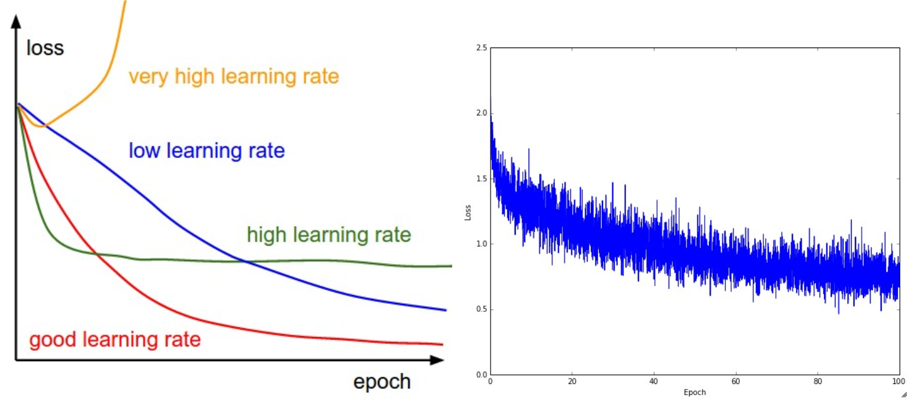
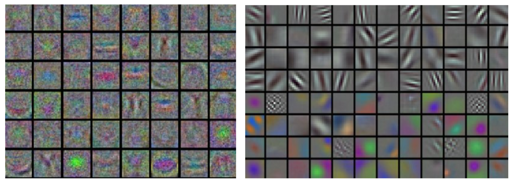

学习和评估
学习过程⚓︎
在前面章节中，我们讨论了神经网络的静态部分：如何创建网络的连接、数据和损失函数。本节将致力于讲解神经网络的动态部分，即神经网络学习参数和搜索最优超参数的过程。
梯度检查⚓︎
理论上讲进行梯度检查很简单，就是简单地把解析梯度和数值计算梯度进行比较。然而从实际操作层面上来说，这个过程更加复杂且容易出错。下面是一些提示、技巧和需要仔细注意的事情：
使用中心化公式。在使用有限差值近似来计算数值梯度的时候，常见的公式是：
其中\(h\)是一个很小的数字，在实践中近似为1e-5。在实践中证明，使用中心化公式效果更好：
该公式在检查梯度的每个维度的时候，会要求计算两次损失函数（所以计算资源的耗费也是两倍），但是梯度的近似值会准确很多。要理解这一点，对\(f(x+h)\)和\(f(x-h)\)使用泰勒展开，可以看到第一个公式的误差近似\(O(h)\)，第二个公式的误差近似\(O(h^2)\)（是个二阶近似）。
使用相对误差来比较。比较数值梯度\(f'_n\)和解析梯度\(f'_a\)的细节有哪些？如何得知此两者不匹配？你可能会倾向于监测它们的差的绝对值\(\mid f'_a - f'_n \mid\)或者差的平方值，然后定义该值如果超过某个规定阈值，就判断梯度实现失败。然而该思路是有问题的。想想，假设这个差值是1e-4，如果两个梯度值在1.0左右，这个差值看起来就很合适，可以认为两个梯度是匹配的。然而如果梯度值是1e-5或者更低，那么1e-4就是非常大的差距，梯度实现肯定就是失败的了。因此，使用相对误差总是更合适一些：
上式考虑了差值占两个梯度绝对值的比例。注意通常相对误差公式只包含两个式子中的一个（任意一个均可），但是我更倾向取两个式子的最大值或者取两个式子的和。这样做是为了防止在其中一个式子为0时，公式分母为0（这种情况，在ReLU中是经常发生的）。然而，还必须注意两个式子都为零且通过梯度检查的情况。在实践中：
- 相对误差>1e-2：通常就意味着梯度可能出错。
- 1e-2>相对误差>1e-4：要对这个值感到不舒服才行。
- 1e-4>相对误差：这个值的相对误差对于有不可导点的目标函数是OK的。但如果目标函数中没有kink（使用tanh和softmax），那么相对误差值1e-4还是太高。
- 1e-7或者更小：好结果，可以高兴一把了。
要知道的是网络的深度越深，相对误差就越高。所以如果你是在对一个10层网络的输入数据做梯度检查，那么1e-2的相对误差值可能就OK了，因为误差一直在累积。相反，如果一个可微函数的相对误差值是1e-2，那么通常说明梯度实现不正确。
使用双精度。一个常见的错误是使用单精度浮点数来进行梯度检查。这样会导致即使梯度实现正确，相对误差值也会很高（比如1e-2）。在我的经验而言，出现过使用单精度浮点数时相对误差为1e-2，换成双精度浮点数时就降低为1e-8的情况。
保持在浮点数的有效范围。建议通读《每一位计算机科学家都应该了解浮点运算》一文，该文将阐明你可能犯的错误，促使你写下更加细心的代码。例如，在神经网络中，在一个批量的数据上对损失函数进行归一化是很常见的。但是，如果每个数据点的梯度很小，然后又用数据点的数量去除，就使得数值更小，这反过来会导致更多的数值问题。这就是我为什么总是会把原始的解析梯度和数值梯度数据打印出来，确保用来比较的数字的值不是过小（通常绝对值小于1e-10就绝对让人担心）。如果确实过小，可以使用一个常数暂时将损失函数的数值范围扩展到一个更“好”的范围，在这个范围中浮点数变得更加致密。比较理想的是1.0的数量级上，即当浮点数指数为0时。
目标函数的不可导点（kinks）。在进行梯度检查时，一个导致不准确的原因是不可导点问题。不可导点是指目标函数不可导的部分，由ReLU（\(max(0,x)\)）等函数，或SVM损失，Maxout神经元等引入。考虑当\(x = -1e6\)的时，对ReLU函数进行梯度检查。因为\(x < 0\)，所以解析梯度在该点的梯度为0。然而，在这里数值梯度会突然计算出一个非零的梯度值，因为\(f(x+h)\)可能越过了不可导点(例如：如果\(h > 1e-6\))，导致了一个非零的结果。你可能会认为这是一个极端的案例，但实际上这种情况很常见。例如，一个用CIFAR-10训练的SVM中，因为有50,000个样本，且根据目标函数每个样本产生9个式子，所以包含有450,000个\(max(0,x)\)式子。而一个用SVM进行分类的神经网络因为采用了ReLU，还会有更多的不可导点。
注意，在计算损失的过程中是可以知道不可导点有没有被越过的。在具有\(max(x,y)\);形式的函数中持续跟踪所有“赢家”的身份，就可以实现这一点。其实就是看在前向传播时，到底x和y谁更大。如果在计算\(f(x+h)\)和\(f(x-h)\)的时候，至少有一个“赢家”的身份变了，那就说明不可导点被越过了，数值梯度会不准确。
使用少量数据点。解决上面的不可导点问题的一个办法是使用更少的数据点。因为含有不可导点的损失函数(例如：因为使用了ReLU或者边缘损失等函数)的数据点越少，不可导点就越少，所以在计算有限差值近似时越过不可导点的几率就越小。还有，如果你的梯度检查对2-3个数据点都有效，那么基本上对整个批量数据进行梯度检查也是没问题的。所以使用很少量的数据点，能让梯度检查更迅速高效。
谨慎设置步长h。在实践中h并不是越小越好，因为当ℎ特别小的时候，就可能就会遇到数值精度问题。有时候如果梯度检查无法进行，可以试试将ℎ调到1e-4或者1e-6，然后突然梯度检查可能就恢复正常。这篇维基百科文章中有一个图表，其x轴为ℎ值，y轴为数值梯度误差。
在操作的特性模式中梯度检查。有一点必须要认识到：梯度检查是在参数空间中的一个特定（往往还是随机的）的单独点进行的。即使是在该点上梯度检查成功了，也不能马上确保全局上梯度的实现都是正确的。还有，一个随机的初始化可能不是参数空间最优代表性的点，这可能导致进入某种病态的情况，即梯度看起来是正确实现了，实际上并没有。例如，SVM使用小数值权重初始化，就会把一些接近于0的得分分配给所有的数据点，而梯度将会在所有的数据点上展现出某种模式。一个不正确实现的梯度也许依然能够产生出这种模式，但是不能泛化到更具代表性的操作模式，比如在一些的得分比另一些得分更大的情况下就不行。因此为了安全起见，最好让网络学习（“预热”）一小段时间，等到损失函数开始下降的之后再进行梯度检查。在第一次迭代就进行梯度检查的危险就在于，此时可能正处在不正常的边界情况，从而掩盖了梯度没有正确实现的事实。
不要让正则化吞没数据。通常损失函数是数据损失和正则化损失的和（例如L2对权重的惩罚）。需要注意的危险是正则化损失可能吞没掉数据损失，在这种情况下梯度主要来源于正则化部分（正则化部分的梯度表达式通常简单很多）。这样就会掩盖掉数据损失梯度的不正确实现。因此，推荐先关掉正则化对数据损失做单独检查，然后对正则化做单独检查。对于正则化的单独检查可以是修改代码，去掉其中数据损失的部分，也可以提高正则化强度，确认其效果在梯度检查中是无法忽略的，这样不正确的实现就会被观察到了。
记得关闭随机失活（dropout）和数据增强（augmentation）。在进行梯度检查时，记得关闭网络中任何不确定的效果的操作，比如随机失活，随机数据增强等。不然它们会在计算数值梯度的时候导致巨大误差。关闭这些操作不好的一点是无法对它们进行梯度检查（例如随机失活的反向传播实现可能有错误）。因此，一个更好的解决方案就是在计算\(f(x+h)\)和\(f(x-h)\)前强制增加一个特定的随机种子，在计算解析梯度时也同样如此。
检查少量的维度。在实际中，梯度可以有上百万的参数，在这种情况下只能检查其中一些维度然后假设其他维度是正确的。注意：确认在所有不同的参数中都抽取一部分来梯度检查。在某些应用中，为了方便，人们将所有的参数放到一个巨大的参数向量中。在这种情况下，例如偏置就可能只占用整个向量中的很小一部分，所以不要随机地从向量中取维度，一定要把这种情况考虑到，确保所有参数都收到了正确的梯度。
学习之前：合理性检查的提示与技巧⚓︎
在进行费时费力的最优化之前，最好进行一些合理性检查：
- 寻找特定情况的正确损失值。在使用小参数进行初始化时，确保得到的损失值与期望一致。最好先单独检查数据损失（让正则化强度为0）。例如，对于一个跑CIFAR-10的Softmax分类器，一般期望它的初始损失值是2.302，这是因为初始时预计每个类别的概率是0.1（因为有10个类别），然后Softmax损失值正确分类的负对数概率：-ln(0.1)=2.302。对于Weston Watkins SVM，假设所有的边界都被越过（因为所有的分值都近似为零），所以损失值是9（因为对于每个错误分类，边界值是1）。如果没看到这些损失值，那么初始化中就可能有问题。
- 第二个合理性检查：提高正则化强度时导致损失值变大。
- 对小数据子集过拟合。最后也是最重要的一步，在整个数据集进行训练之前，尝试在一个很小的数据集上进行训练（比如20个数据），然后确保能到达0的损失值。进行这个实验的时候，最好让正则化强度为0，不然它会阻止得到0的损失。除非能通过这一个正常性检查，不然进行整个数据集训练是没有意义的。但是注意，能对小数据集进行过拟合并不代表万事大吉，依然有可能存在不正确的实现。比如，因为某些错误，数据点的特征是随机的，这样算法也可能对小数据进行过拟合，但是在整个数据集上跑算法的时候，就没有任何泛化能力。
检查整个学习过程⚓︎
在训练神经网络的时候，应该跟踪多个重要数值。这些数值输出的图表是观察训练进程的一扇窗口，是直观理解不同的超参数设置效果的工具，从而知道如何修改超参数以获得更高效的学习过程。
在下面的图表中，x轴通常都是表示周期（epochs）单位，该单位衡量了在训练中每个样本数据都被观察过次数的期望（一个周期意味着每个样本数据都被观察过了一次）。相较于迭代次数（iterations），一般更倾向跟踪周期，这是因为迭代次数与数据的批尺寸（batchsize）有关，而批尺寸的设置又可以是任意的。
损失函数⚓︎
训练期间第一个要跟踪的数值就是损失值，它在前向传播时对每个独立的批数据进行计算。下图展示的是随着损失值随时间的变化，尤其是曲线形状会给出关于学习率设置的情况：

左图展示了不同的学习率的效果。过低的学习率导致算法的改善是线性的。高一些的学习率会看起来呈几何指数下降，更高的学习率会让损失值很快下降，但是接着就停在一个不好的损失值上（绿线）。这是因为最优化的“能量”太大，参数在混沌中随机震荡，不能最优化到一个很好的点上。右图显示了一个典型的随时间变化的损失函数值，在CIFAR-10数据集上面训练了一个小的网络，这个损失函数值曲线看起来比较合理（虽然可能学习率有点小，但是很难说），而且指出了批数据的数量可能有点太小（因为损失值的噪音很大）。
损失值的震荡程度和批尺寸（batch size）有关，当批尺寸为1，震荡会相对较大。当批尺寸就是整个数据集时震荡就会最小，因为每个梯度更新都是单调地优化损失函数（除非学习率设置得过高）。
有的研究者喜欢用对数域对损失函数值作图。因为学习过程一般都是采用指数型的形状，图表就会看起来更像是能够直观理解的直线，而不是呈曲棍球一样的曲线状。还有，如果多个交叉验证模型在一个图上同时输出图像，它们之间的差异就会比较明显。
有时候损失函数看起来很有意思：lossfunctions.tumblr.com。
训练集和验证集准确率⚓︎
在训练分类器的时候，需要跟踪的第二重要的数值是验证集和训练集的准确率。这个图表能够展现知道模型过拟合的程度：

在训练集准确率和验证集准确率中间的空隙指明了模型过拟合的程度。在图中，蓝色的验证集曲线显示相较于训练集，验证集的准确率低了很多，这就说明模型有很强的过拟合。遇到这种情况，就应该增大正则化强度（更强的L2权重惩罚，更多的随机失活等）或收集更多的数据。另一种可能就是验证集曲线和训练集曲线如影随形，这种情况说明你的模型容量还不够大：应该通过增加参数数量让模型容量更大些。
权重更新比例⚓︎
最后一个应该跟踪的量是权重中更新值的数量和全部值的数量之间的比例。注意：是更新的，而不是原始梯度（比如，在普通sgd中就是梯度乘以学习率）。需要对每个参数集的更新比例进行单独的计算和跟踪。一个经验性的结论是这个比例应该在1e-3左右。如果更低，说明学习率可能太小，如果更高，说明学习率可能太高。下面是具体例子：
# 假设参数向量为W，其梯度向量为dW
param_scale = np.linalg.norm(W.ravel())
update = -learning_rate*dW # 简单SGD更新
update_scale = np.linalg.norm(update.ravel())
W += update # 实际更新
print update_scale / param_scale # 要得到1e-3左右
相较于跟踪最大和最小值，有研究者更喜欢计算和跟踪梯度的范式及其更新。这些矩阵通常是相关的，也能得到近似的结果。
每层的激活数据及梯度分布⚓︎
一个不正确的初始化可能让学习过程变慢，甚至彻底停止。还好，这个问题可以比较简单地诊断出来。其中一个方法是输出网络中所有层的激活数据和梯度分布的柱状图。直观地说，就是如果看到任何奇怪的分布情况，那都不是好兆头。比如，对于使用tanh的神经元，我们应该看到激活数据的值在整个[-1,1]区间中都有分布。如果看到神经元的输出全部是0，或者全都饱和了往-1和1上跑，那肯定就是有问题了。
第一层可视化⚓︎
最后，如果数据是图像像素数据，那么把第一层特征可视化会有帮助：

将神经网络第一层的权重可视化的例子。左图中的特征充满了噪音，这暗示了网络可能出现了问题：网络没有收敛，学习率设置不恰当，正则化惩罚的权重过低。右图的特征不错，平滑，干净而且种类繁多，说明训练过程进行良好。
参数更新⚓︎
一旦能使用反向传播计算解析梯度，梯度就能被用来进行参数更新了。进行参数更新有好几种方法，接下来都会进行讨论。
深度网络的最优化是现在非常活跃的研究领域。本节将重点介绍一些公认有效的常用的技巧，这些技巧都是在实践中会遇到的。我们将简要介绍这些技巧的直观概念，但不进行细节分析。对于细节感兴趣的读者，我们提供了一些拓展阅读。
随机梯度下降及各种更新方法⚓︎
普通更新。最简单的更新形式是沿着负梯度方向改变参数（因为梯度指向的是上升方向，但是我们通常希望最小化损失函数）。假设有一个参数向量x及其梯度dx，那么最简单的更新的形式是：
# 普通更新
x += - learning_rate * dx
其中learning_rate 是一个超参数，它是一个固定的常量。当在整个数据集上进行计算时，只要学习率足够低，总是能在损失函数上得到非负的进展。
动量（Momentum）更新是另一个方法，这个方法在深度网络上几乎总能得到更好的收敛速度。该方法可以看成是从物理角度上对于最优化问题得到的启发。损失值可以理解为是山的高度（因此高度势能是\(U = mgh\)，所以有 \(U \propto h\)）。用随机数字初始化参数等同于在某个位置给质点设定初始速度为0。这样最优化过程可以看做是模拟参数向量（即质点）在地形上滚动的过程。
因为作用于质点的力与梯度的潜在能量（ \(F = - \nabla U\)）有关，质点所受的力就是损失函数的（负）梯度。还有，因为\(F = ma\)，所以在这个观点下（负）梯度与质点的加速度是成比例的。注意这个理解和上面的随机梯度下降（SDG）是不同的，在普通版本中，梯度直接影响位置。而在这个版本的更新中，物理观点建议梯度只是影响速度，然后速度再影响位置：
# 动量更新
v = mu * v - learning_rate * dx # 与速度融合
x += v # 与位置融合
在这里引入了一个初始化为0的变量 v 和一个超参数mu。说得不恰当一点，这个变量（mu）在最优化的过程中被看做动量（一般值设为0.9），但其物理意义与摩擦系数更一致。这个变量有效地抑制了速度，降低了系统的动能，不然质点在山底永远不会停下来。通过交叉验证，这个参数通常设为[0.5,0.9,0.95,0.99]中的一个。和学习率随着时间退火（下文有讨论）类似，动量随时间变化的设置有时能略微改善最优化的效果，其中动量在学习过程的后阶段会上升。一个典型的设置是刚开始将动量设为0.5而在后面的多个周期（epoch）中慢慢提升到0.99。
通过动量更新，参数向量会在任何有持续梯度的方向上增加速度。
Nesterov动量与普通动量有些许不同，最近变得比较流行。在理论上对于凸函数它能得到更好的收敛，在实践中也确实比标准动量表现更好一些。
Nesterov动量的核心思路是，当参数向量位于某个位置x时，观察上面的动量更新公式可以发现，动量部分（忽视带梯度的第二个部分）会通过mu * v稍微改变参数向量。因此，如果要计算梯度，那么可以将未来的近似位置x + mu * v看做是“向前看”，这个点在我们一会儿要停止的位置附近。因此，计算x + mu * v的梯度而不是“旧”位置x的梯度就有意义了。

Nesterov动量。既然我们知道动量将会把我们带到绿色箭头指向的点，我们就不要在原点（红色点）那里计算梯度了。使用Nesterov动量，我们就在这个“向前看”的地方计算梯度。
也就是说，添加一些注释后，实现代码如下：
x_ahead = x + mu * v
# 计算dx_ahead(在x_ahead处的梯度，而不是在x处的梯度)
v = mu * v - learning_rate * dx_ahead
x += v
然而在实践中，人们更喜欢和普通SGD或上面的动量方法一样简单的表达式。通过对 x_ahead = x + mu * v使用变量变换进行改写是可以做到的，然后用 x_ahead而不是x来表示上面的更新。也就是说，实际存储的参数向量总是向前一步的那个版本。x_ahead的公式（将其重新命名为x）就变成了：
v_prev = v # 存储备份
v = mu * v - learning_rate * dx # 速度更新保持不变
x += -mu * v_prev + (1 + mu) * v # 位置更新变了形式
对于NAG（Nesterov's Accelerated Momentum）的来源和数学公式推导，我们推荐以下的拓展阅读：
- Yoshua Bengio的Advances in optimizing Recurrent Networks，Section 3.5。
- Ilya Sutskever's thesis (pdf)在section 7.2对于这个主题有更详尽的阐述。
学习率退火anneal⚓︎
在训练深度网络的时候，让学习率随着时间退火通常是有帮助的。可以这样理解：如果学习率很高，系统的动能就过大，参数向量就会无规律地跳动，不能够稳定到损失函数更深更窄的部分去。知道什么时候开始衰减学习率是有技巧的：慢慢减小它，可能在很长时间内只能是浪费计算资源地看着它混沌地跳动，实际进展很少。但如果快速地减少它，系统可能过快地失去能量，不能到达原本可以到达的最好位置。通常，实现学习率退火有3种方式：
- 随步数衰减：每进行几个周期就根据一些因素降低学习率。典型的值是每过5个周期就将学习率减少一半，或者每20个周期减少到之前的0.1。这些数值的设定是严重依赖具体问题和模型的选择的。在实践中可能看见这么一种经验做法：使用一个固定的学习率来进行训练的同时观察验证集错误率，每当验证集错误率停止下降，就乘以一个常数（比如0.5）来降低学习率。
- 指数衰减。数学公式是\(\alpha = \alpha_0 e^{-k t}\)，其中\(\alpha_0, k\) 是超参数，\(t\)是迭代次数（也可以使用周期作为单位）。
- 1/t衰减的数学公式是\(\alpha = \alpha_0 / (1 + k t )\)，其中\(a_0, k\)是超参数，\(t\)是迭代次数。
在实践中，我们发现随步数衰减的随机失活（dropout）更受欢迎，因为它使用的超参数（衰减系数和以周期为时间单位的步数）比\(k\)更有解释性。最后，如果你有足够的计算资源，可以让衰减更加缓慢一些，让训练时间更长些。
二阶方法⚓︎
在深度网络背景下，第二类常用的最优化方法是基于牛顿法的，其迭代如下：
这里\(H f(x)\)是Hessian矩阵，它是函数的二阶偏导数的平方矩阵。\(\nabla f(x)\)是梯度向量，这和梯度下降中一样。直观理解上，Hessian矩阵描述了损失函数的局部曲率，从而使得可以进行更高效的参数更新。具体来说，就是乘以Hessian转置矩阵可以让最优化过程在曲率小的时候大步前进，在曲率大的时候小步前进。需要重点注意的是，在这个公式中是没有学习率这个超参数的，这相较于一阶方法是一个巨大的优势。
然而上述更新方法很难运用到实际的深度学习应用中去，这是因为计算（以及求逆）Hessian矩阵操作非常耗费时间和空间。举例来说，假设一个有一百万个参数的神经网络，其Hessian矩阵大小就是[1,000,000 x 1,000,000]，将占用将近3,725GB的内存。这样，各种各样的拟-牛顿法就被发明出来用于近似转置Hessian矩阵。在这些方法中最流行的是L-BFGS，该方法使用随时间的梯度中的信息来隐式地近似（也就是说整个矩阵是从来没有被计算的）。
然而，即使解决了存储空间的问题，L-BFGS应用的一个巨大劣势是需要对整个训练集进行计算，而整个训练集一般包含几百万的样本。和小批量随机梯度下降（mini-batch SGD）不同，让L-BFGS在小批量上运行起来是很需要技巧，同时也是研究热点。
实践。在深度学习和卷积神经网络中，使用L-BFGS之类的二阶方法并不常见。相反，基于（Nesterov的）动量更新的各种随机梯度下降方法更加常用，因为它们更加简单且容易扩展。
参考资料：
- Large Scale Distributed Deep Networks 一文来自谷歌大脑团队，比较了在大规模数据情况下L-BFGS和SGD算法的表现。
- SFO算法想要把SGD和L-BFGS的优势结合起来。
逐参数适应学习率方法⚓︎
前面讨论的所有方法都是对学习率进行全局地操作，并且对所有的参数都是一样的。学习率调参是很耗费计算资源的过程，所以很多工作投入到发明能够适应性地对学习率调参的方法，甚至是逐个参数适应学习率调参。很多这些方法依然需要其他的超参数设置，但是其观点是这些方法对于更广范围的超参数比原始的学习率方法有更良好的表现。在本小节我们会介绍一些在实践中可能会遇到的常用适应算法：
Adagrad是一个由Duchi等提出的适应性学习率算法
# 假设有梯度和参数向量x
cache += dx**2
x += - learning_rate * dx / (np.sqrt(cache) + eps)
注意，变量cache的尺寸和梯度矩阵的尺寸是一样的，还跟踪了每个参数的梯度的平方和。这个一会儿将用来归一化参数更新步长，归一化是逐元素进行的。注意，接收到高梯度值的权重更新的效果被减弱，而接收到低梯度值的权重的更新效果将会增强。有趣的是平方根的操作非常重要，如果去掉，算法的表现将会糟糕很多。用于平滑的式子eps （一般设为1e-4到1e-8之间）是防止出现除以0的情况。Adagrad的一个缺点是，在深度学习中单调的学习率被证明通常过于激进且过早停止学习。
RMSprop。是一个非常高效，但没有公开发表的适应性学习率方法。有趣的是，每个使用这个方法的人在他们的论文中都引用自Geoff Hinton的Coursera课程的第六课的第29页PPT。这个方法用一种很简单的方式修改了Adagrad方法，让它不那么激进，单调地降低了学习率。具体说来，就是它使用了一个梯度平方的滑动平均：
cache = decay_rate * cache + (1 - decay_rate) * dx**2
x += - learning_rate * dx / (np.sqrt(cache) + eps)
在上面的代码中，decay_rate是一个超参数，常用的值是[0.9,0.99,0.999]。其中x+=和Adagrad中是一样的，但是cache变量是不同的。因此，RMSProp仍然是基于梯度的大小来对每个权重的学习率进行修改，这同样效果不错。但是和Adagrad不同，其更新不会让学习率单调变小。
Adam。Adam是最近才提出的一种更新方法，它看起来像是RMSProp的动量版。简化的代码是下面这样：
m = beta1*m + (1-beta1)*dx
v = beta2*v + (1-beta2)*(dx**2)
x += - learning_rate * m / (np.sqrt(v) + eps)
注意这个更新方法看起来真的和RMSProp很像，除了使用的是平滑版的梯度m，而不是用的原始梯度向量dx。论文中推荐的参数值eps = 1e-8, beta1 = 0.9, beta2 = 0.999。在实际操作中，我们推荐Adam作为默认的算法，一般而言跑起来比RMSProp要好一点。但是也可以试试SGD+Nesterov动量。完整的Adam更新算法也包含了一个偏置矫正机制，因为m,v两个矩阵初始为0，在没有完全热身之前存在偏差，需要采取一些补偿措施。使用偏置矫正机制，更新如下：
# t is your iteration counter going from 1 to infinity
m = beta1*m + (1-beta1)*dx
mt = m / (1-beta1**t)
v = beta2*v + (1-beta2)*(dx**2)
vt = v / (1-beta2**t)
x += - learning_rate * mt / (np.sqrt(vt) + eps)
我们请读者参阅论文以了解详细信息，或参阅课程幻灯片以进行扩展。
拓展阅读：
- Unit Tests for Stochastic Optimization提出了一系列测试作为随机优化的标准化基准。


上面的动画可以帮助你理解学习的动态过程。上边是一个损失函数的等高线图，上面跑的是不同的最优化算法。注意基于动量的方法出现了射偏了的情况，使得最优化过程看起来像是一个球滚下山的样子。下边展示了一个马鞍状的最优化地形，其中对于不同维度它的曲率不同（一个维度下降另一个维度上升）。注意SGD很难突破对称性，一直卡在顶部。而RMSProp之类的方法能够看到马鞍方向有很低的梯度。因为在RMSProp更新方法中的分母项，算法提高了在该方向的有效学习率，使得RMSProp能够继续前进。图片版权：Alec Radford。
超参数调优⚓︎
我们已经看到，训练一个神经网络会遇到很多超参数设置。神经网络最常用的设置有：
- 初始学习率。
- 学习率衰减方式（例如一个衰减常量）。
- 正则化强度（L2惩罚，随机失活强度）。
但是也可以看到，还有很多相对不那么敏感的超参数。比如在逐参数适应学习方法中，对于动量及其时间表的设置等。在本节中将介绍一些额外的调参要点和技巧：
实现。更大的神经网络需要更长的时间去训练，所以调参可能需要几天甚至几周。记住这一点很重要，因为这会影响你设计代码的思路。一个具体的设计是用仆程序worker持续地随机设置参数然后进行最优化。在训练过程中，仆程序worker会对每个周期后验证集的准确率进行监控，然后向文件系统写下一个模型的记录点checkpoint（记录点中有各种各样的训练统计数据，比如随着时间的损失值变化等），这个文件系统最好是可共享的。在文件名中最好包含验证集的算法表现，这样就能方便地查找和排序了。然后还有一个主程序master，它可以启动或者结束计算集群中的仆程序worker，有时候也可能根据条件查看仆程序worker写下的记录点，输出它们的训练统计数据等。
比起交叉验证最好使用一个验证集。在大多数情况下，一个尺寸合理的验证集可以让代码更简单，不需要用几个数据集来交叉验证。你可能会听到人们说他们“交叉验证”一个参数，但是大多数情况下，他们实际是使用的一个验证集。
超参数范围。在对数尺度上进行超参数搜索。例如，一个典型的学习率应该看起来是这样：learning_rate = 10 ** uniform(-6, 1)。也就是说，我们从标准分布中随机生成了一个数字，然后让它成为10的阶数。对于正则化强度，可以采用同样的策略。直观地说，这是因为学习率和正则化强度都对于训练的动态进程有乘的效果。例如：当学习率是0.001的时候，如果对其固定地增加0.01，那么对于学习进程会有很大影响。然而当学习率是10的时候，影响就微乎其微了。这就是因为学习率乘以了计算出的梯度。因此，比起加上或者减少某些值，思考学习率的范围是乘以或者除以某些值更加自然。但是有一些参数（比如随机失活）还是在原始尺度上进行搜索（例如：dropout = uniform(0,1)）。
随机搜索优于网格搜索。Bergstra和Bengio在文章Random Search for Hyper-Parameter Optimization中说“随机选择比网格化的选择更加有效”，而且在实践中也更容易实现。

在Random Search for Hyper-Parameter Optimization中的核心说明图。通常，有些超参数比其余的更重要，通过随机搜索，而不是网格化的搜索，可以让你更精确地发现那些比较重要的超参数的好数值。
对于边界上的最优值要小心。这种情况一般发生在你在一个不好的范围内搜索超参数（比如学习率）的时候。比如，假设我们使用learning_rate = 10 ** uniform(-6, 1)来进行搜索。一旦我们得到一个比较好的值，一定要确认你的值不是出于这个范围的边界上，不然你可能错过更好的其他搜索范围。
从粗到细地分阶段搜索。在实践中，先进行初略范围（比如10 ** [-6, 1]）搜索，然后根据好的结果出现的地方，缩小范围进行搜索。进行粗搜索的时候，让模型训练一个周期就可以了，因为很多超参数的设定会让模型没法学习，或者突然就爆出很大的损失值。第二个阶段就是对一个更小的范围进行搜索，这时可以让模型运行5个周期，而最后一个阶段就在最终的范围内进行仔细搜索，运行很多次周期。
贝叶斯超参数最优化是一整个研究领域，主要是研究在超参数空间中更高效的导航算法。其核心的思路是在不同超参数设置下查看算法性能时，要在探索和使用中进行合理的权衡。基于这些模型，发展出很多的库，比较有名的有： Spearmint, SMAC, 和Hyperopt。然而，在卷积神经网络的实际使用中，比起上面介绍的先认真挑选的一个范围，然后在该范围内随机搜索的方法，这个方法还是差一些。这里有更详细的讨论。
评估 Evaluation⚓︎
模型集成 Model Ensembles⚓︎
在实践的时候，有一个总是能提升神经网络几个百分点准确率的办法，就是在训练的时候训练几个独立的模型，然后在测试的时候平均它们预测结果。集成的模型数量增加，算法的结果也单调提升（但提升效果越来越少）。还有模型之间的差异度越大，提升效果可能越好。进行集成有以下几种方法：
- 同一个模型，不同的初始化。使用交叉验证来得到最好的超参数，然后用最好的参数来训练不同初始化条件的模型。这种方法的风险在于多样性只来自于不同的初始化条件。
- 在交叉验证中发现最好的模型。使用交叉验证来得到最好的超参数，然后取其中最好的几个（比如10个）模型来进行集成。这样就提高了集成的多样性，但风险在于可能会包含不够理想的模型。在实际操作中，这样操作起来比较简单，在交叉验证后就不需要额外的训练了。
- 一个模型设置多个记录点。如果训练非常耗时，那就在不同的训练时间对网络留下记录点（比如每个周期结束），然后用它们来进行模型集成。很显然，这样做多样性不足，但是在实践中效果还是不错的，这种方法的优势是代价比较小。
- 在训练的时候跑参数的平均值。和上面一点相关的，还有一个也能得到1-2个百分点的提升的小代价方法，这个方法就是在训练过程中，如果损失值相较于前一次权重出现指数下降时，就在内存中对网络的权重进行一个备份。这样你就对前几次循环中的网络状态进行了平均。你会发现这个“平滑”过的版本的权重总是能得到更少的误差。直观的理解就是目标函数是一个碗状的，你的网络在这个周围跳跃，所以对它们平均一下，就更可能跳到中心去。
模型集成的一个劣势就是在测试数据的时候会花费更多时间。最近Geoff Hinton在“Dark Knowledge”上的工作很有启发：其思路是通过将集成似然估计纳入到修改的目标函数中，从一个好的集成中抽出一个单独模型。
总结⚓︎
训练一个神经网络需要：
- 利用小批量数据对实现进行梯度检查，还要注意各种错误。
- 进行合理性检查，确认初始损失值是合理的，在小数据集上能得到100%的准确率。
- 在训练时，跟踪损失函数值，训练集和验证集准确率，如果愿意，还可以跟踪更新的参数量相对于总参数量的比例（一般在1e-3左右），然后如果是对于卷积神经网络，可以将第一层的权重可视化。
- 推荐的两个更新方法是SGD+Nesterov动量方法，或者Adam方法。
- 随着训练进行学习率衰减。比如，在固定多少个周期后让学习率减半，或者当验证集准确率下降的时候。
- 使用随机搜索（不要用网格搜索）来搜索最优的超参数。分阶段从粗（比较宽的超参数范围训练1-5个周期）到细（窄范围训练很多个周期）地来搜索。
- 进行模型集成来获得额外的性能提高。
拓展阅读⚓︎
- Leon Bottou的《SGD要点和技巧》。
- Yann LeCun的《高效反向传播》。
- Yoshua Bengio的《基于梯度的深层架构训练实用建议》。
创建日期: September 16, 2023